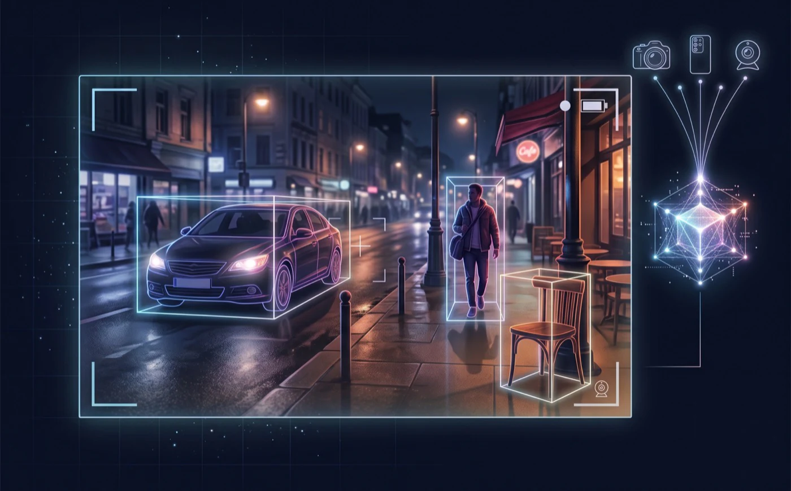

CAMDet — Camera-Agnostic Metric 3D Detection
CAMDet: camera-agnostic monocular 3D object detection from a single RGB image — real-time and edge-deployable across different cameras.

Same scene, different camera
Scroll to watch it unfold. Each beat is one documented step of the project.
- 01
Different cameras
Each lens sees the same scene a little differently, which quietly breaks most single-image 3D detectors.
- 02
Robust to the camera
Training makes the model robust to the camera itself, so one set of weights covers sensors it never saw.
- 03
Metric depth
From one ordinary RGB photo it estimates how far away each object is, with no depth sensor.
- 04
Full 3D box
The 2D box, the distance and the 3D box come out together from one shared set of queries.
- 05
Outcome
Real time, up to about 128 FPS at the smallest scale, and the same exported model runs from a desktop GPU down to an edge device.
An illustration of how the system works, drawn from the write-up below. It is not recorded output.
Overview
CAMDet works out where objects are in 3D — their size, distance and position — from a single ordinary photo, with no depth sensor. The catch it tackles: most single-image 3D detectors are quietly tuned to one specific camera, so pointing a different camera at the same scene drops their accuracy, because every lens “sees” the world a little differently.
Approach
It's a single transformer-based detector that predicts each object's 2D box, its distance, and its full 3D box together from one shared set of queries — reusing the predicted depth as the object's 3D centre. The key move is training the model to be robust to the camera itself, so one set of weights generalises to sensors it never saw during training instead of overfitting to the camera it was trained on.
Results
CAMDet beats strong prior methods at every model size and runs in real time — up to about 128 frames per second at its smallest scale. On cameras deliberately held out of training it outperforms a standard baseline by a wide margin, and the exact same exported model runs unchanged all the way from a desktop GPU down to a battery-powered edge device.
By the numbers
Tech stack & key skills
Core tools, methods and skills demonstrated in this project: